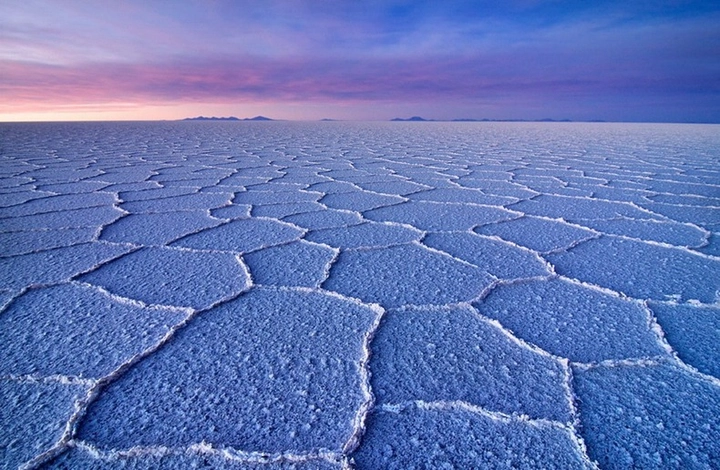
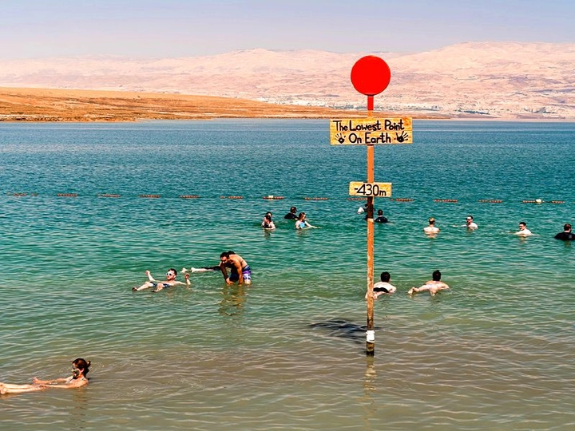
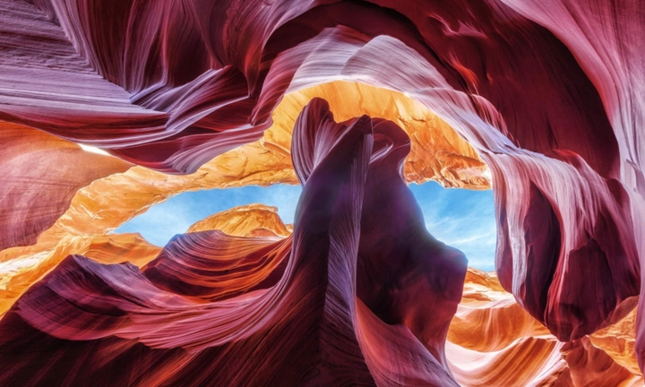
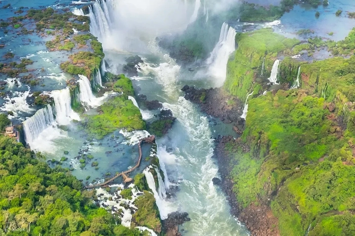
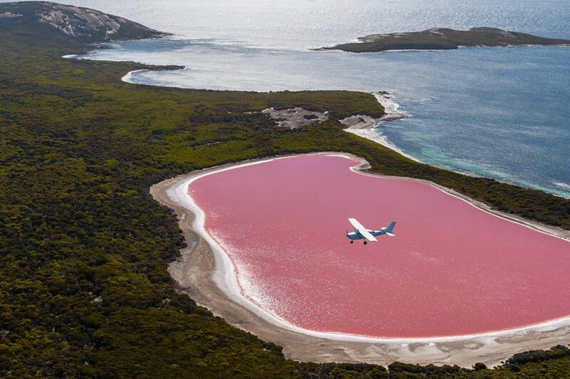

Top 10 vùng đất độc đáo với hiện tượng thiên nhiên kỳ lạ trên Trái Đất
Trái đất không chỉ là nơi chúng ta sinh sống, mà còn là một kho tàng kỳ quan thiên nhiên đầy bí ẩn và bất ngờ. Từ những hồ nước đổi màu đến những sa mạc phản chiếu như gương, mỗi vùng đất mang một câu chuyện riêng, vừa đẹp vừa kỳ lạ.
Những hiện tượng thiên nhiên này không chỉ thu hút các nhà khoa học mà còn là điểm đến mơ ước cho các nhà khám phá và nhiếp ảnh gia. Trong bài viết này, hãy cùng TrithucWorld khám phá 10 vùng đất độc đáo trên thế giới, nơi thiên nhiên thể hiện sức mạnh sáng tạo tuyệt vời của mình.
1. Salar de Uyuni, Bolivia – Sa mạc muối rộng lớn
Salar de Uyuni, nằm ở phía tây Bolivia, là sa mạc muối lớn nhất thế giới, trải rộng hơn 10.000 km². Đây không chỉ là một địa điểm du lịch nổi tiếng mà còn là biểu tượng thiên nhiên độc đáo với cảnh quan rộng mênh mông, trắng xóa như một biển muối vô tận. Diện tích khổng lồ và lớp muối mịn trải dài tạo cảm giác bất tận, khiến du khách có cảm giác như đang đứng giữa một thế giới hoàn toàn khác.
Điều làm nên sự kỳ diệu của Salar de Uyuni là hiện tượng phản chiếu hoàn hảo khi trời mưa. Lớp muối trắng hòa cùng nước mưa tạo ra một tấm gương khổng lồ, phản chiếu bầu trời và những đám mây, khiến người đứng trên đó như đang bước đi trên mây. Hiệu ứng này thay đổi tùy theo ánh sáng, thời điểm trong ngày và lượng mưa, khiến mỗi khoảnh khắc đều mang một vẻ đẹp khác biệt, huyền ảo.
Bên cạnh giá trị thẩm mỹ, Salar de Uyuni còn là nguồn khoáng sản quan trọng, đặc biệt là lithium – nguyên liệu chủ yếu dùng trong pin điện tử và công nghệ hiện đại. Đây là một trong những khoáng sản chiến lược, giúp Bolivia trở thành quốc gia có vai trò quan trọng trong ngành công nghiệp năng lượng tái tạo toàn cầu.

Sa mạc muối còn sở hữu những đảo đá độc đáo và cồn muối hình học tự nhiên. Những đảo này nổi bật giữa biển muối trắng, với cảnh quan kỳ vĩ và gần như không thể tìm thấy ở nơi nào khác trên thế giới. Các cồn muối hình học, với bề mặt nhẵn và đường nét rõ ràng, khiến cho Salar de Uyuni trở thành địa điểm hấp dẫn không chỉ với du khách mà còn với các nhà nghiên cứu địa chất và nhiếp ảnh gia.
Với sự kết hợp giữa cảnh quan thiên nhiên độc đáo và giá trị khoa học, Salar de Uyuni trở thành điểm đến mơ ước của những người yêu thích khám phá. Nhiếp ảnh gia từ khắp nơi trên thế giới thường chọn sa mạc này là bối cảnh để ghi lại những tấm hình kỳ ảo, đặc biệt vào mùa mưa, khi hiệu ứng phản chiếu đạt tới mức hoàn hảo. Mỗi bức ảnh là một tác phẩm nghệ thuật tự nhiên, mang lại cảm giác huyền bí và choáng ngợp mà khó có nơi nào trên Trái đất có được.
2. Biển Chết, Israel & Jordan – Nơi con người nổi trên mặt nước
Biển Chết là một trong những hồ nước kỳ lạ nhất trên thế giới, nằm giữa Israel và Jordan. Điểm đặc biệt của hồ là nồng độ muối cực cao, lên tới gần 34%, khiến cho bất kỳ ai bước vào cũng có thể nổi tự nhiên trên mặt nước mà không cần bơi. Cảm giác này vừa kỳ lạ vừa thú vị, khiến Biển Chết trở thành điểm đến hấp dẫn cho du khách muốn trải nghiệm cảm giác “bất khả thi” mà thiên nhiên ban tặng.
Không chỉ có hiện tượng nổi độc đáo, Biển Chết còn có môi trường sinh học đặc biệt. Những vi sinh vật và khoáng chất trong nước hồ tạo ra màu sắc đa dạng, từ xanh nhạt đến nâu đỏ, tùy thuộc vào mùa và ánh sáng. Bùn khoáng ở đây nổi tiếng với khả năng dưỡng da và chữa bệnh, thu hút những người tìm kiếm liệu pháp tự nhiên. Khung cảnh xung quanh hồ, với những dãy núi hùng vĩ và sa mạc trải dài, làm nổi bật vẻ đẹp hoang sơ và bí ẩn của Biển Chết.
Bên cạnh giá trị thiên nhiên, Biển Chết còn gắn liền với lịch sử và văn hóa. Nơi đây từng xuất hiện trong nhiều ghi chép cổ đại, đồng thời là trung tâm các hoạt động thương mại và tôn giáo từ hàng ngàn năm trước. Ngày nay, Biển Chết không chỉ thu hút du khách quốc tế mà còn là địa điểm nghiên cứu khoa học, đặc biệt trong lĩnh vực địa chất, khoáng sản và sinh học.

Những người hâm mộ nhiếp ảnh và vlog du lịch thường tìm đến Biển Chết để ghi lại những bức ảnh nổi trên mặt nước, kết hợp với cảnh quan núi non bao quanh. Mỗi khoảnh khắc trên hồ đều khác nhau, từ ánh sáng bình minh đến hoàng hôn rực rỡ, tạo nên bức tranh thiên nhiên sống động và kỳ ảo.
Với sự kết hợp giữa trải nghiệm thú vị, giá trị sinh học và cảnh quan hùng vĩ, Biển Chết trở thành một trong những kỳ quan thiên nhiên hiếm có, là nơi mà con người và thiên nhiên giao hòa một cách đặc biệt.
3. Hang Sơn Đoòng, Việt Nam – Hang động lớn nhất thế giới
Hang Sơn Đoòng, tọa lạc tại tỉnh Quảng Bình, Việt Nam, được công nhận là hang động lớn nhất thế giới với chiều dài hơn 9 km, rộng 200 m và cao hơn 150 m. Hang nổi bật với các vòm đá vôi khổng lồ, sông ngầm chảy qua và hệ sinh thái riêng biệt bên trong. Bên trong hang, ánh sáng chỉ lọt qua một số khe hở, tạo ra các tia sáng huyền ảo chiếu lên cây cối và địa hình đá vôi, khiến không gian như bước ra từ một bộ phim khoa học viễn tưởng.
Sơn Đoòng sở hữu hệ thống thạch nhũ và măng đá độc đáo, nhiều khối thạch nhũ cao bằng tòa nhà nhiều tầng, với hình dáng kỳ lạ do dòng chảy nước ngầm và hàng triệu năm xói mòn tạo nên. Các nhà khoa học phát hiện hang có địa hình và hệ sinh thái riêng, bao gồm những loài thực vật và động vật chưa từng được ghi nhận ở nơi khác. Điều này biến Sơn Đoòng thành một “thế giới thu nhỏ” giữa lòng Trái đất, vừa kỳ ảo vừa quý giá về mặt nghiên cứu.
Việc khám phá Sơn Đoòng không hề dễ dàng, đòi hỏi du khách phải trải qua hành trình mạo hiểm với địa hình hiểm trở, từ leo núi, băng rừng đến đi qua sông ngầm. Đây chính là lý do hang vẫn giữ được sự nguyên sơ, ít bị tác động bởi con người. Những người may mắn đặt chân tới đây sẽ trải nghiệm sự giao hòa tuyệt vời giữa thiên nhiên, ánh sáng và không gian hùng vĩ, cảm nhận sự nhỏ bé của con người trước sức mạnh của tự nhiên.
Bên cạnh giá trị khám phá, Sơn Đoòng còn thu hút nhiếp ảnh gia và nhà làm phim quốc tế. Mỗi hình ảnh từ hang đều mang vẻ đẹp huyền ảo, khác biệt hoàn toàn với bất kỳ cảnh quan nào khác trên thế giới. Nhờ vậy, hang Sơn Đoòng không chỉ là kỳ quan thiên nhiên mà còn là biểu tượng của niềm tự hào Việt Nam trên bản đồ du lịch quốc tế.
4. Hồ Natron, Tanzania – Hồ đỏ kỳ bí
Hồ Natron nằm ở phía bắc Tanzania, nổi tiếng nhờ màu đỏ rực kỳ bí và môi trường nước cực kiềm. Nước hồ chứa các khoáng chất độc hại và muối kiềm cao, khiến nhiều sinh vật khi chết gần hồ có thể được bảo quản tự nhiên, tạo ra những cảnh tượng vừa rùng rợn vừa huyền ảo. Màu đỏ của hồ xuất phát từ sự phát triển của tảo và vi khuẩn trong môi trường kiềm, khiến hồ trở thành một trong những hồ nước độc đáo nhất hành tinh.
Hồ Natron không chỉ kỳ lạ về màu sắc mà còn là điểm sinh sản quan trọng của chim hồng hạc (flamingo). Vào mùa sinh sản, hàng nghìn con chim tụ tập, tạo nên cảnh tượng sống động giữa hồ đỏ rực. Điều này biến hồ thành một bức tranh thiên nhiên vừa sống động vừa độc đáo, thu hút nhiếp ảnh gia từ khắp nơi trên thế giới.
Bên cạnh yếu tố thiên nhiên, hồ còn là một môi trường nghiên cứu khoa học quý giá. Các nhà sinh vật học và địa chất học nghiên cứu tại đây để hiểu rõ hơn về khả năng sinh tồn của các sinh vật trong môi trường khắc nghiệt, đồng thời tìm hiểu các vi sinh vật có thể ứng dụng trong y học hoặc công nghệ sinh học.
Mặc dù hồ có vẻ đáng sợ với màu nước đỏ rực và khả năng bảo quản xác động vật, Natron lại là biểu tượng của sức sống và sự kỳ diệu của thiên nhiên. Những ai đặt chân tới đây đều ấn tượng bởi sự khác biệt hoàn toàn so với các hồ nước thông thường, từ cảnh quan đến các hiện tượng sinh học kỳ lạ.
5. Hẻm núi Antelope, Mỹ – Hẻm núi ánh sáng
Hẻm núi Antelope, nằm ở Arizona, Mỹ, là một trong những hẻm núi đẹp và kỳ lạ nhất thế giới nhờ địa hình uốn lượn và ánh sáng chiếu qua các khe đá. Qua hàng triệu năm, nước và gió đã tạo ra những đường cong mềm mại trên đá đỏ, biến hẻm núi thành một tác phẩm nghệ thuật tự nhiên. Mỗi khe núi đều có hình dáng khác nhau, với các vân đá độc đáo, khiến nơi này trở thành địa điểm lý tưởng cho nhiếp ảnh và các bộ phim tài liệu.
Điều đặc biệt của hẻm núi là hiệu ứng ánh sáng tự nhiên. Khi ánh sáng mặt trời chiếu qua các khe hẹp vào buổi sáng hoặc trưa, tạo ra các vệt sáng và bóng cực kỳ nghệ thuật. Hiệu ứng ánh sáng này thay đổi liên tục, khiến mỗi khoảnh khắc đều khác nhau, khiến du khách và nhiếp ảnh gia không bao giờ cảm thấy nhàm chán.

Hẻm núi Antelope được chia thành hai phần chính: Upper Antelope Canyon với các tia sáng nổi bật, và Lower Antelope Canyon với địa hình hiểm trở hơn nhưng vẫn mang vẻ đẹp quyến rũ. Sự kết hợp giữa ánh sáng, màu sắc và địa hình tạo nên một không gian vừa huyền bí vừa sống động, khiến bất kỳ ai bước vào cũng bị mê hoặc.
Ngoài giá trị thẩm mỹ, hẻm núi còn là bằng chứng về quá trình địa chất lâu dài, giúp các nhà khoa học nghiên cứu về tác động của nước, gió và thời gian đối với cấu trúc đá. Đồng thời, đây cũng là điểm đến du lịch mạo hiểm và văn hóa bản địa, khi người Navajo quản lý và dẫn tour, chia sẻ câu chuyện lịch sử và truyền thuyết địa phương.
6. Hồ Kawah Ijen, Indonesia – Hồ axit xanh lục và núi lửa phát sáng
Hồ Kawah Ijen nằm trong miệng núi lửa Ijen, thuộc đảo Java, Indonesia. Điều đặc biệt ở đây là màu nước xanh lục kỳ lạ, xuất phát từ nồng độ cao của axit sulfuric và các khoáng chất hòa tan. Khi ánh sáng mặt trời chiếu vào, hồ hiện lên màu xanh biếc rực rỡ, tạo cảm giác vừa huyền bí vừa mạnh mẽ. Khung cảnh xung quanh hồ là những vách đá núi lửa đen tuyền, tạo sự tương phản kỳ lạ với màu xanh của nước.
Ngoài vẻ đẹp tự nhiên, Kawah Ijen còn nổi tiếng với hiện tượng núi lửa phát sáng vào ban đêm. Khí sulfur bốc lên khi gặp lửa sẽ phát sáng màu xanh lam, khiến du khách có cảm giác như đang đứng trước một cảnh tượng kỳ ảo từ thế giới khác. Đây là một trong những hiện tượng núi lửa hiếm gặp, thu hút các nhà khoa học, nhiếp ảnh gia và những người yêu khám phá mạo hiểm.
Hồ Kawah Ijen còn có công việc khai thác lưu huỳnh thủ công của người dân địa phương. Những người thợ bốc vác khổ cực mang từng khối lưu huỳnh từ miệng núi lửa xuống chân núi, một hoạt động vừa nguy hiểm vừa mang giá trị kinh tế. Du khách khi đến Kawah Ijen không chỉ được chiêm ngưỡng vẻ đẹp thiên nhiên mà còn trải nghiệm cuộc sống đầy nỗ lực và kiên cường của người dân địa phương.
7. Thác Iguazu, Argentina & Brazil – Thác nước hùng vĩ
Thác Iguazu là một trong những thác nước hoành tráng nhất thế giới, nằm trên biên giới Argentina và Brazil. Với chiều cao lên tới 82 m và chiều rộng hơn 2,7 km, thác tạo nên một bức tường nước trắng xóa, vang vọng âm thanh mạnh mẽ khắp vùng. Hệ thống thác chia thành hàng trăm dòng nhỏ, xen kẽ với các hòn đảo đá, tạo nên cảnh quan hùng vĩ, vừa dữ dội vừa nên thơ.
Thác Iguazu còn nổi bật nhờ hệ sinh thái xung quanh. Rừng mưa nhiệt đới bao quanh thác là nơi sinh sống của nhiều loài động vật quý hiếm như khỉ, chim và báo, tạo nên một môi trường thiên nhiên đa dạng và phong phú. Du khách có thể đi thuyền gần thác để cảm nhận sức mạnh khủng khiếp của nước, hoặc đi bộ trên các cầu gỗ để chiêm ngưỡng toàn cảnh từ trên cao.

Ngoài giá trị cảnh quan, Iguazu là di sản thiên nhiên thế giới, thu hút hàng triệu du khách mỗi năm. Các nhiếp ảnh gia và nhà làm phim thường chọn nơi đây làm bối cảnh, nhờ vẻ đẹp hùng vĩ, ánh sáng tự nhiên tuyệt vời và sự kết hợp hoàn hảo giữa nước, đá và rừng xanh.
8. Vịnh Hạ Long, Việt Nam – Kỳ quan địa chất và thiên nhiên
Vịnh Hạ Long nổi tiếng với hàng nghìn đảo đá vôi lớn nhỏ nhô lên từ mặt nước tạo nên cảnh quan huyền bí. Hình dáng các đảo đa dạng, từ những mỏm đá nhọn, vòm đá kỳ lạ đến những hang động độc đáo. Mỗi hòn đảo lại mang một câu chuyện dân gian riêng, khiến Hạ Long vừa là kỳ quan thiên nhiên vừa là di sản văn hóa đặc sắc.
Điều làm nên sự kỳ lạ của Hạ Long là hiện tượng karst đá vôi. Qua hàng triệu năm xói mòn, địa hình đá vôi tạo ra những hình thù kỳ lạ, hang động, hồ nước ẩn bên trong đảo. Vịnh còn nổi bật với cảnh bình minh và hoàng hôn huyền ảo, khi mặt nước phản chiếu ánh sáng và những đỉnh núi đá, khiến khung cảnh như bước ra từ tranh thủy mặc.
Hạ Long không chỉ thu hút du khách Việt Nam mà còn là điểm đến quốc tế, nơi các nhà nhiếp ảnh, nhà khoa học và nghệ sĩ tìm cảm hứng. Những chuyến du thuyền trên vịnh giúp trải nghiệm cảnh quan toàn diện, từ đảo đá, làng chài cổ kính đến sinh vật biển phong phú.
9. Núi Roraima, Venezuela/Brazil/Guyana – Núi bàn kỳ ảo
Núi Roraima là một trong những núi bàn (tepui) nổi tiếng nhất thế giới, nằm giữa Venezuela, Brazil và Guyana. Với độ cao hơn 2.800 m, Roraima có mặt đỉnh bằng phẳng, bao quanh là vách đá dựng đứng, tạo ra cảnh quan cực kỳ độc đáo, như bước ra từ một bộ phim khoa học viễn tưởng. Núi Roraima được xem là một trong những nơi cổ xưa nhất trên Trái đất, với cấu trúc địa chất hình thành hàng tỷ năm trước.
Khí hậu trên núi thay đổi thất thường, từ mưa lớn đến sương mù dày đặc, khiến hệ sinh thái trên đỉnh Roraima khác biệt hoàn toàn so với xung quanh. Đây là nơi sinh sống của nhiều loài thực vật và động vật quý hiếm, một số loài chỉ tìm thấy trên đỉnh núi này. Các nhà khoa học và nhà thám hiểm thường gọi Roraima là “một hành tinh thu nhỏ”, nhờ vẻ đẹp kỳ lạ và sự biệt lập của nó.
Núi Roraima cũng là điểm đến ưa thích của các trekker, những người yêu thích phiêu lưu mạo hiểm và khám phá tự nhiên. Hành trình lên núi đầy thử thách nhưng bù lại là trải nghiệm chiêm ngưỡng cảnh quan hùng vĩ, sương mù huyền ảo và đa dạng sinh học độc đáo.
10. Hồ Hillier, Úc – Hồ hồng nổi bật giữa đảo
Hồ Hillier, nằm trên Middle Island, Úc, nổi tiếng với màu hồng rực rỡ và bền vững quanh năm. Màu hồng đặc trưng của hồ xuất phát từ tảo Dunaliella salina và vi khuẩn Halobacteria, tạo ra hiện tượng thiên nhiên hiếm gặp. Khi nhìn từ trên cao, hồ Hillier giống như một viên ngọc hồng nổi bật giữa rừng cây xanh và bờ biển trắng xóa, tạo nên cảnh quan vô cùng độc đáo và khó quên.

Điều đặc biệt là màu hồng của hồ không thay đổi dù mùa khô hay mùa mưa, và nước hồ vẫn giữ được tính mặn cao, khiến hồ Hillier trở thành hiện tượng thiên nhiên độc nhất. Du khách không thể bơi trực tiếp trong hồ nhưng có thể tham quan bằng đường hàng không hoặc đi bộ quanh hồ, chiêm ngưỡng vẻ đẹp kỳ lạ và sống động này.
Hồ Hillier không chỉ thu hút những người yêu thiên nhiên và nhiếp ảnh gia mà còn là chủ đề nghiên cứu về sinh vật học, tảo và vi khuẩn. Sự kết hợp giữa màu sắc, địa hình và vị trí hẻo lánh khiến hồ Hillier trở thành một trong những hồ nước kỳ lạ nhất thế giới, minh chứng cho sự sáng tạo tuyệt vời của thiên nhiên.